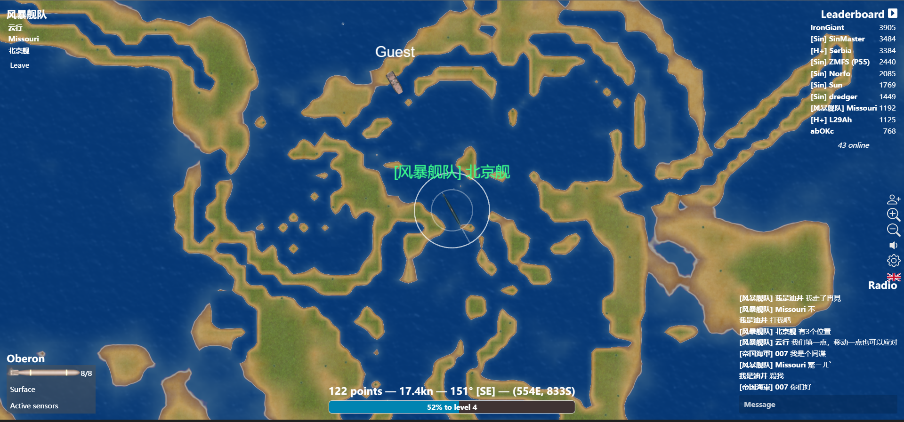
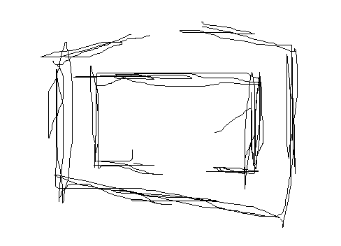

风暴舰队作战报告
最后更新于 2022年6月29日风暴舰队作战报告
2022年6月29日，敌军Sin舰队（以下简称S舰队）对我们的基地发起了猛烈的进攻
基地结构
由很厚的土地围成圈构成，厚度已经达到了一条挖泥船的长度，是非常坚固的，基地内部包括四个油井
战后的基地
S舰队使用了许多卑鄙至极的手段，使用挖泥船进攻，甚至在敌方挖泥船被歼灭的时候，勾搭其他舰队的挖泥船，与其用保护交换让挖泥船进攻，这点就可以体现S舰队丑恶的本质
 战后千疮百孔的基地
当时的应对措施
对敌军挖泥船的进攻，是我们采用了多种措施，例如用飞机迂回地空袭，逼出敌人后集火炮击，但是挖泥船有时候建立起来严密的土地使得我们无法打到他们，于是本人在敌军挖泥船的进攻下壮烈“牺牲”了
回过头来，思考这整个局面，正如行云，也就是风暴说的那样，全体挖泥就可以解决问题
我们都不愿意自杀当挖泥，是因为我们太自私，太恋战，缺没有思考这个战争的重点
新发现
战败后，我和风暴一起用挖泥进攻了敌人的基地，拆掉了敌军的三个油井平台，彻底将敌军的基地变成了一片废墟，这次反击算是报仇了
但重点在于我们攻击的过程，我们挖泥攻击很顺畅，只有我再一次迫不得已的情况下变成布雷舰布雷后被敌军鱼雷击沉，其余没有伤亡
于是，我想出了策略：进攻全用挖泥，防守全用挖泥
当然，这也过于绝对了，毕竟一定要有战舰保护，只要挖泥有3个最好4个就行，其实重点是挖泥一定要起到作用
还有一个关于防守的重点，最好是四个挖泥船守四个角，每个只管附近的敌人，不然走来走去防守的效率并不高，会耽误时间从而导致基地沦陷
另外
由钻天猴提出的双层反向开口基地如果用来抵御进攻，应该会更有效，但出乎意料的是钻天猴的方案在战术讨论中被否决了，我不太清楚为什么
这种防守应该很好才对
附：双层反向开口基地示意图
